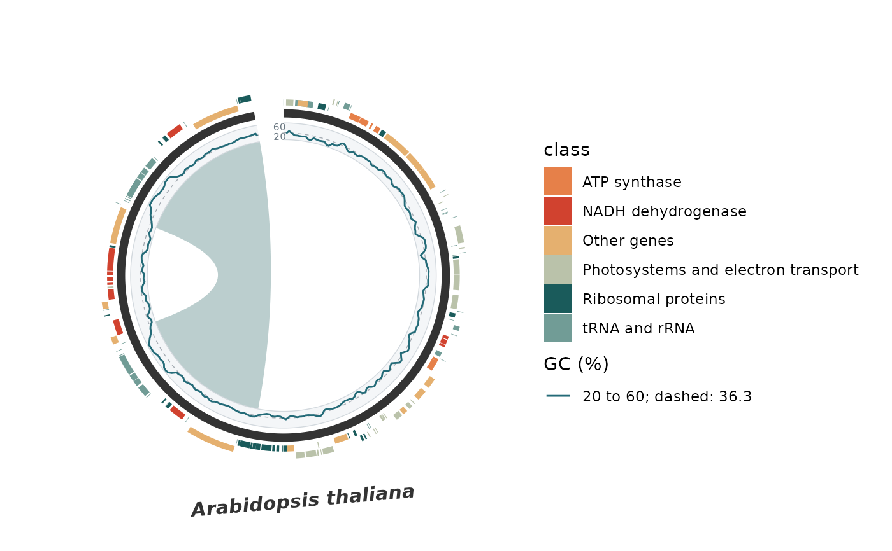

One wrapper per track type, each calling syn_track() with its geom
fixed and listing only the options that type uses. Add any of them to a
plot with +, in any order; they stack as described in syn_track().
Usage
syn_track_feature(
data,
fill = NULL,
palette = NULL,
name = NULL,
strand = c("none", "split", "arrow"),
label = NULL,
label_size = 2.5,
label_colour = "#333333",
label_face = "plain",
colour = NA,
linewidth = 0.2,
alpha = 1,
na.value = "#BDBDBD",
height = 0.08,
gap = 0.02,
position = c("outside", "inside"),
out_of_bounds = c("error", "clip", "drop"),
show.legend = TRUE,
background = ggplot2::element_blank(),
border = ggplot2::element_blank()
)
syn_track_heatmap(
data,
name = "GC (%)",
limits = c(0, 100),
palette = c("#F7FBFF", "#6BAED6", "#08306B"),
na.value = "#BDBDBD",
height = 0.1,
gap = 0.03,
position = c("outside", "inside"),
out_of_bounds = c("error", "clip", "drop"),
show.legend = TRUE,
background = ggplot2::element_blank(),
border = ggplot2::element_blank()
)
syn_track_line(
data,
name = "GC (%)",
limits = c(0, 100),
colour = "#246B78",
linewidth = 0.5,
reference = NULL,
axis = TRUE,
height = 0.1,
gap = 0.03,
position = c("outside", "inside"),
out_of_bounds = c("error", "clip", "drop"),
show.legend = TRUE,
background = NULL,
border = NULL,
reference_line = ggplot2::element_line(colour = "#A6ADB4", linewidth = 0.25, linetype =
"dashed")
)
syn_track_bar(
data,
name = "GC (%)",
limits = c(0, 100),
colour = "#246B78",
baseline = limits[1],
reference = NULL,
axis = TRUE,
height = 0.1,
gap = 0.03,
position = c("outside", "inside"),
out_of_bounds = c("error", "clip", "drop"),
show.legend = TRUE,
background = NULL,
border = NULL,
reference_line = ggplot2::element_line(colour = "#A6ADB4", linewidth = 0.25, linetype =
"dashed")
)Arguments
- data
Data frame with one row per interval:
startandendin the plot's coordinate units, plus the sequence keysspecies/chr(group/seq_idandbin_id/seq_idare also accepted). Keys may be omitted when the plot leaves no ambiguity:specieswhen the plot shows one species, andchrwhen that species has one sequence. Numeric geoms read avaluecolumn; feature geoms read the columns named infill,labeland, for strand options,strand.- fill
Feature geom: the name of a column whose values colour the intervals as categories (with a legend), or one fixed colour.
NULLdraws one neutral grey.- palette
Colours. Numeric heatmaps use a gradient (colour vector, built-in ltc name or HCL palette name); features use one colour per category, from a vector named by category, an unnamed vector, an ltc name or an HCL palette name.
- name
Legend title. Defaults to
"GC (%)"for numeric geoms and to thefillcolumn name for features.- strand
Feature geom:
"none"fills the whole lane;"split"puts+intervals in the outer/upper half and-in the inner/lower half;"arrow"draws strand arrows. Both read astrandcolumn holding"+"/"-","plus"/"minus"or1/-1; other values are unstranded.- label
Feature geom: optional column with text written at the middle of each interval, following the ring in circular plots.
- label_size, label_colour, label_face
Feature label size in mm, colour and font face.
- colour
Line/bar colour (default
"#246B78"), or the feature outline colour (defaultNA, no outline).- linewidth
Line thickness (default 0.5) or feature outline width (default 0.2), in mm.
- alpha
Feature fill transparency.
- na.value
Colour for a missing numeric value, or for a feature category absent from a named
palette.- height, gap
Lane thickness and preceding gap as fractions of linear tier spacing or of the original circle radius. Defaults: 0.10 and 0.03 for numeric geoms, 0.08 and 0.02 for features.
- position
Circular placement:
"outside"stacks rings outward from the chromosome band;"inside"stacks them inward, shrinking the ribbons toward the centre to make room. Linear plots ignore this argument.- out_of_bounds
Intervals extending past a displayed sequence:
"error"(default),"clip"to the sequence bounds, or"drop".- show.legend
Show this track's legend?
- background, border
Lane background and boundary lines as
ggplot2::element_rect()/ggplot2::element_line(), orelement_blank().NULLgives a light grey background and borders for lines and bars, and none for heatmaps and features.- limits
Numeric geoms only: two increasing finite numbers for the value scale, default 0 to 100. Non-missing values outside them error.
- reference
Line/bar geoms: optional value for a dashed guide.
- axis
Line/bar geoms: label the lane edges with the limits?
- reference_line
Style of the
referenceguide asggplot2::element_line();element_blank()hides it.- baseline
Bar geom: bar origin within
limits, default the lower limit. Use zero with limits spanning zero for signed measurements.
Value
An object added to a ggplot with +; see syn_track().
Which one to use
syn_track_feature()Intervals as boxes coloured by a category: genes, regions, repeats, any annotation. Needs
start/endand the columns named infill,labeland, for strand options,strand.strand = "split"separates the two strands into half lanes;strand = "arrow"draws gene arrows. A region band is a feature track withfillandlabelboth set to the region column.syn_track_heatmap()One numeric
valueper interval, drawn as a colour tile on a gradient betweenlimits. Best for per-gene summaries and non-overlapping windows.syn_track_line()One numeric
valueper interval, drawn as a line through the interval midpoints. Supports overlapping sliding windows; breaks at missing values, gaps and sequence boundaries.syn_track_bar()One numeric
valueper interval, drawn as a bar frombaselineover the interval width. Uselimitsspanning zero andbaseline = 0for signed measurements such as GC skew.
Every wrapper accepts height, gap, position, out_of_bounds and
show.legend, and the sequence keys may be left out of data when the
plot leaves no ambiguity (one species, one sequence).
Examples
dir <- system.file("extdata", "chloroplast", package = "ggsynteny")
genes <- read.csv(file.path(dir, "genes.csv"))
gc <- read.csv(file.path(dir, "gc_windows.csv"))
gc <- data.frame(start = gc$start, end = gc$start + 999,
value = 100 * gc$gc, skew = gc$skew)
sp <- "Arabidopsis thaliana"
syn <- list(chromosomes = data.frame(species = sp, chr = "plastid", size = 154478),
blocks = data.frame(species1 = sp, chr1 = "plastid", start1 = 84171, end1 = 110434,
species2 = sp, chr2 = "plastid", start2 = 128215, end2 = 154478))
plot_circular_synteny(syn, label_size = 0) +
syn_track_feature(genes, fill = "class", strand = "split") +
syn_track_line(gc, limits = c(20, 60), reference = 36.3, position = "inside",
out_of_bounds = "clip")
